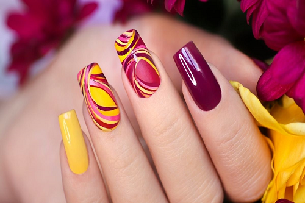
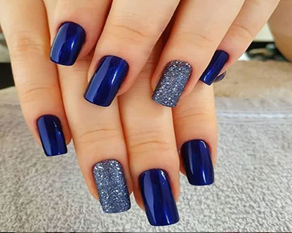

Procurando por modelos de unhas cheias de charme e que tragam grande glamour ao seu look?

Se você gosta daquelas unhas de gel, com aspecto de que você acabou de sair da manicure, pode conseguir isso com a aplicação das unhas de gel. O processo é bem simples, mas requer uma manutenção mensal.

Com as unhas em gel, o esmalte dura por muito mais tempo. Podemos executar as tarefas diárias e utilizar produtos de limpeza sem nos preocupar em descascar ou quebrá-las. Se aplicadas corretamente.

As unhas de gel ficam ainda mais destacadas quando decoradas dessa forma. Use e abuse da decoração multicor para as suas unhas.

Pedras, glitter e muito charme para a decoração das unhas de gel. Se você quer destacar as suas, essa é uma boa escolha.
Manutenção
As unhas duram, em média, 15 – 30 ou 60 dias sem manutenção, mas fazer a manutenção periódica com o profissional vai garantir que a sua unhe dure até 3 meses (ou mais). A manutenção é necessária, não só para aumentar a durabilidade, mas também para evitar que as unhas desenvolvam fungos e bactérias. É importante procurar um profissional capacitado para aplicar as unhas artificiais ou se informar muito antes de iniciar qualquer procedimento. Comprar materiais de qualidade é essencial para que as unhas não desenvolvam fungos e bactérias, o que pode levar a quebra e queda das mesmas. Agora que você sabe tuuudo sobre unhas artificiais é só arrasar. E aí, você já tem alguma unha artificial ou pretende ter? Conta pra gente!